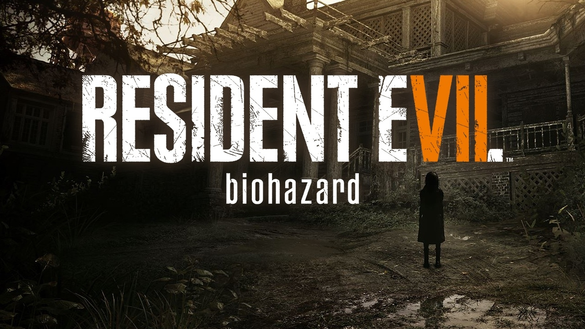

Resident Evil 7: Biohazard
This game, released by Capcom in 2017, is a gripping survival horror experience seamlessly blending first-person shooter elements and adventure gameplay. Set in a deranged, isolated plantation, the game follows the protagonist as they unravel a nightmarish story filled with grotesque creatures and disturbing mysteries. With an impressive Metacritic score of 86, Resident Evil 7 offers a terrifying and immersive journey into the heart of horror.
| SCORE | CRITIC | REVIEW | PLATFORM |
|---|---|---|---|
| 92 | Ragequit.gr | Resident Evil 7 feels like the interactive, dirty-secret bastard child of The Texas Chainsaw Massacre and The Hills Have Eyes coupled with the series signature gameplay mechanics. A lean n' mean return to the essence of horror. Purists as well as series virgins will be enchanted. 2017’s first must play title. | PC |
| 100 | Windows Central | I loved exploring the dilapidated swamps of the Baker Plantation, exploring each macabre room, perusing each foreboding text file, and desperately diving through each fetid trash can for discarded shotgun shells. | XBOX ONE |
| 90 | PC Gamer | Not the dramatic reinvention I expected, but this is tense and refined survival horror with a brilliantly bleak, grimy atmosphere. | PC |
| 100 | TheXboxHub | The changes have been a long time coming, but the final result may well have given us one of the best horror titles we are likely to see this year…finally bringing the horror back to Resident Evil. | XBOX ONE |
| 90 | PCGamesN | After the fifth and sixth games, the Resident Evil series was in dire need of a re-think. That’s exactly what Capcom have done, and they’ve done so in a way that’s braver, bolder, and more assured than I could ever have dreamed. | PC |
| 92 | MondoXbox | Despite its radical switch to first person view, Resident Evil 7 biohazard represents a real comeback to the series' origins, with a disturbing and scary atmosphere, great story and characters and a thrilling gameplay mixing exploration, puzzle solving and combat. An awesome new beginning for Capcom's franchise. | XBOX ONE |
| 100 | Destructoid | Resident Evil 7 went beyond my expectations, and I feel we have an instant classic here. I want to jump back in right now, and I have a feeling I'll be doing so for years to come. | PLAYSTATION4 |
| 100 | God is a Geek | Despite being a reboot for the series, Resident Evil VII’s return to survival horror is both familiar and fresh, and it’s easily the best horror game in years. | PLAYSTATION4 |
| 91 | SomosXbox | Resident Evil 7 is one of the best survival horror games of recent years. The Bakers are terrifying, the first-person camera works fine and the atmosphere is unique. But, the most important thing is that Resident Evil 7 is the best title in the saga since Resident Evil 4. | XBOX ONE |
| 90 | Multiplayer.it | Resident Evil 7 returns to horror with a change of perspective that suits PC controls well. Technically is far from perfect, but the good stuff shines with more definition and more frames. | PC |